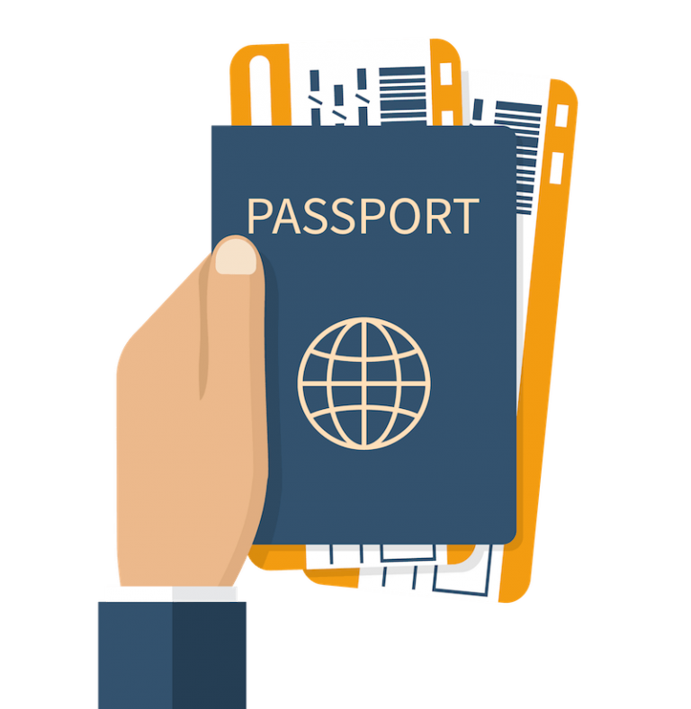
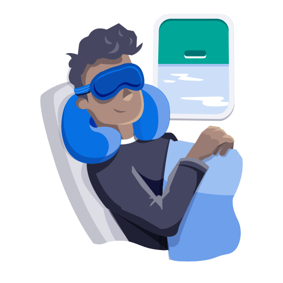

| 해외여행 필수 준비물 |
| 여권 챙기셨나요? |
|  |
| 너무 당연한 준비물이지만 놓치기 쉬운데요. 어느 나라든 여권만료 기간이 6개월 이하 남았다면 입국이 제한될 수 있으니 여권만료 기간을 꼭 확인하시길 바랍니다. 여권은 해외에서 나의 신분을 나타내주는 유일한 신분증입니다. 잃어버린다면 곤란한 상황은 물론 여해을 망칠 수도 있겠죠. 이를 대비해서 여권 스캔 파일을 이메일이나 유심에 저장해놓거나, 여권 복사본을 챙겨 가시기를 추천해 드립니다. |
| 백팩? 케리어? |
| 배낭을 이용하면 두 손이 자유롭고 이동 시 편리하면서도 신속하게 움직일 수 있습니다. 하지만 무조건 배낭을 추천드리지는 않습니다.자신의 신체조건과 여행기간을 고려해서가방을 선택해야 합니다. 무거운 배낭을 매고 하는 여행은, 가혹하기만 합니다. 플레밍은 "백팩의 무게가 몸무게의 40%를 넘어서는 안 된다"고 말합니다. 또한, 여분의 공간이 있다고 해서 짐을 더 싸야 하는 것은 아니라는 것을 기억하셔야합니다. 어떤 종류의 경험을 원하는지 미리 결정한 다음, 그것을 위해 구체적으로 짐을 싸시길 추천드립니다. |
| 휴대용 가방에 꼭 챙겨야 할 물건들 |
|
● 여권 : 해외 여행자라면 반드시 챙겨야할 필수 여행 준비물.
● 지갑 : 현금, 체크/신용카드, 국제학생증, 국제면허증 등을 소지하기 ● 여분의 마스크와 100ml 이하의 손 소독제 : 개인의 위생과 안전을 생각하면 필수! ● E-티켓 및 바우처 : 요즘은 핸드폰 앱에서 바로 QR코드나 바코드로 가능한 경우가 많지만, 혹시 모르니 사전에 준비해두는 것도 추천드립니다. |
| 비행 중 있으면 유용한 물건들 |
|  |
|
● 목베개, 안대, 귀마개 : 편안한 비행은 물론, 숙면에 도움을 주기에 필수 여행 준비물 중 하나입니다. ●기내 반입 기준에 적합한 수분크림, 립밤, 얇은 스카프 : 건조하고 서늘한 기내에서 체온 유지 및 피부 보호에 도움이 됩니다. ● 볼펜 : 빠른 입국신고서 작성시 필요한 여행 준비물 중 하나입니다. ●씹는 치약 : 고체형 치약으로, 국제선 액체류 반입 규정을 신경 쓰지 않아도 되어 편리합니다. |
| 기내로 들고 타야 할 물건들 |
|
● 보조배터리 : 기내 반입 허용기준은 항공사마다 조금씩 다르니, 꼭 해당 항공사 홈페이지를 참고하시길 바랍니다. ● 카메라, 노트북, 태블릿 pc 등의 고가의 장비 귀걸이, 팔찌와 같은 귀중품 ● 라이터: 위탁 수하물로 반입할 수 없으며, 1개만 소지가 가능합니다. |
| 캐리어/백팩에 꼭 챙겨야 할 물건들 |
 |
|
● 옷과 속옷, 양말
● 신발류 ● 화장품 : 기초 제품, 선크림, 수분크림, 마스크팩 등 ● 상비약 : 멀미약, 지사제, 해열제, 종합 감기약, 상처연고 등이 있으며, 요즘에는 소포장(낱개 포장)된 제품도 많아 편리합니다. ● 넓이가 있는 얇은 스카프 : 추울 때 걸치기 좋으며, 해변 또는 잔디에서 돗자리처럼 활용할 수도 있습니다. ● 선글라스와 가방에 넣기 좋은 모자 : 햇볕으로부터 눈을 보호 할 수도 있으며, 비를 피할 때도 유용합니다. |